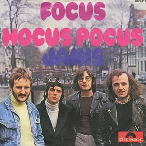

Focus — Hocus Pocus
"Hocus Pocus" — песня голландской рок-группы Focus, написанная клавишником, флейтистом и вокалистом Тейсом ван Леером и гитаристом Яном Аккерманом. Композиция была записана и выпущена в 1971 году как вступительный трек их второго студийного альбома Moving Waves.